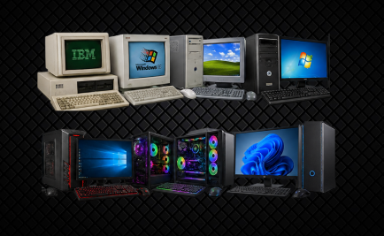

Os primeiros jogos no computador
Os computadores pessoais abriram espaço para jogos de estratégia, aventura e simulação, com comunidades que criavam mapas, modificações e experiências próprias.
O UNIVERSO DOS JOGOS DE PC
Do computador pessoal às máquinas gamer, veja como o PC se tornou uma plataforma versátil para jogar.

Os computadores pessoais abriram espaço para jogos de estratégia, aventura e simulação, com comunidades que criavam mapas, modificações e experiências próprias.
A evolução de processadores, placas de vídeo, armazenamento e monitores permitiu gráficos cada vez mais detalhados e taxas de quadros mais altas.
No PC, jogadores podem personalizar componentes, ajustar configurações gráficas, usar diferentes controles e acessar lojas digitais e jogos independentes.